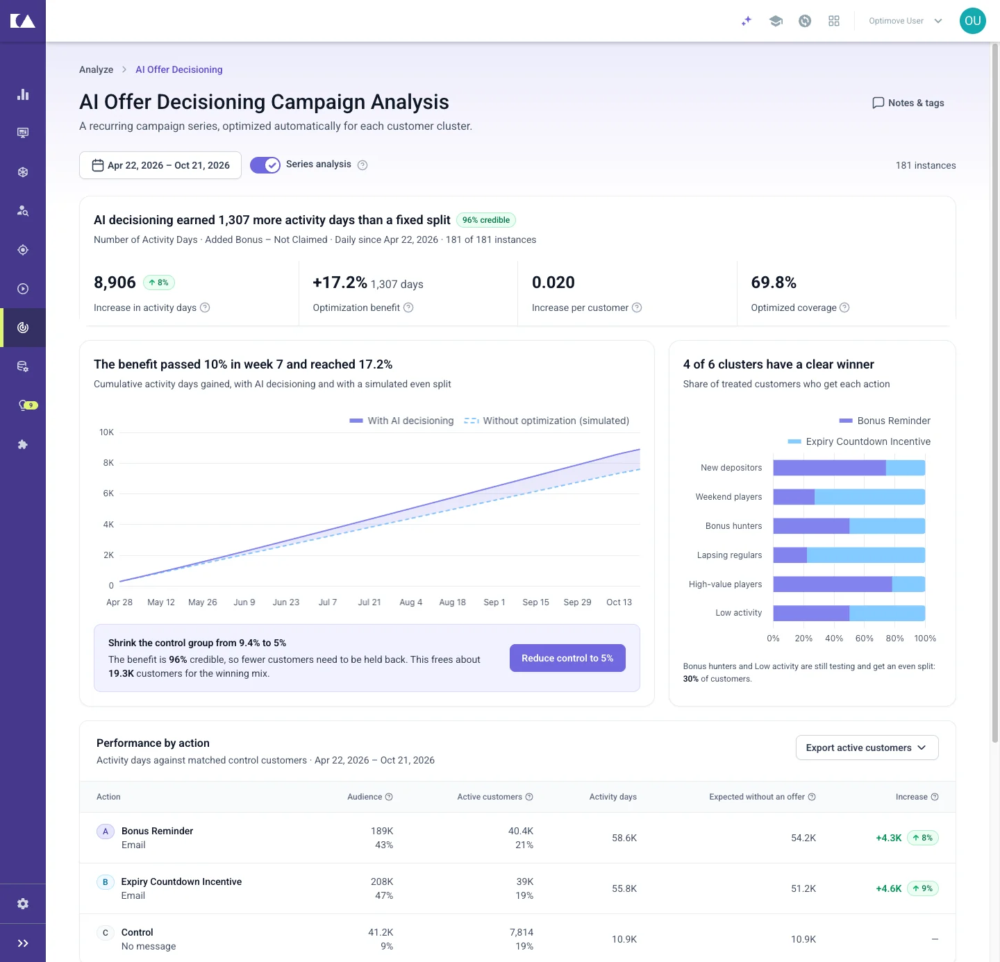

01
Team skill
compose-optimove-screens
I built this skill so a product need becomes a working Optimove screen, made only from our design system’s real components. It sizes the effort, learns the product, plans the page, then clicks every state before anyone reviews it.
A screen isn’t finished when it looks right. It’s finished when every state has been clicked.
Why one listA rule is easier to recognise than to remember. So the ten checks sit in one list you can take in at a glance.
- 1HierarchyWhat needs action is read first, then the result.
- 2CompositionThe figure that matters sits where the eye starts.
- 3ReadabilityOne big figure per idea, its label quiet underneath.
- 4SpaceCards, corners and padding come from design tokens only.
- 5ConsistencyThe same action looks the same, wherever it appears.
- 6Data displayEvery rate sits beside its baseline.
- 7StatesEmpty, loading, error and done: each designed and clicked.
- 8CopyThe title is the answer, and problems open with what’s needed.
- 9AccessibilityContrast, focus and target size checked on every action.
- 10MotionMotion explains a change; the layout never jumps.
How it works
Why one shapePractice on a familiar pattern is free speed. Every run takes the same six steps in the same order; only the effort inside each step changes.
What it changed
Ideation
We don’t bring one idea anymore. A new screen comes up, and soon we’re clicking through a few working versions of it. Not pictures of ideas. The ideas, running.
User testing
Users now experience the real product, not a mockup of it. No “ignore that part”, no “pretend this loads”. Every state is clicked and checked before the session, so what we learn is about the product, not the prototype.
Handoff
Not a spec. Screens built from the same React library our developers ship, with a list of everything a designer should review: whatever the design system didn’t have.
Tracking
The skill keeps score on itself. About 50 checks run on every screen, a second agent critiques the bigger ones, and every approved screen is replayed on each change. Drift stops being a surprise. It’s a list.
Screen examples

Campaign performance
Whether campaigns beat their control groups, which channels add the revenue, and the one offer worth testing next.

Promotions analytics
Whether reward spend buys deposits, which promotions are close to a limit, and where the next cap should go.

Campaign analysis
Whether a daily campaign actually moved deposits, whether its email can take the credit, and what to fix before the next send.

AI Offer Decisioning Campaign Analysis
Whether AI decisioning beats a fixed split for a recurring campaign series, which customer clusters have a clear winner, and the one change worth making now.

Dashboard
Whether the program is healthy today, and whether campaigns are producing a credible increase in the KPIs that matter.

Content Intelligence
Which content types respond better than their share of sends suggests, which get too little reach to trust, and what to draft next.

Predictive models performance
Whether the churn model can still be trusted for targeting, which bucket drifted and since when, and which attributes it leans on.

Benchmark Report
Where your KPIs sit against comparable operators, which lever to pull first, and how each KPI has moved month by month.

Revenue overview
Whether revenue is growing, which channels contribute, and which customer segments need attention.